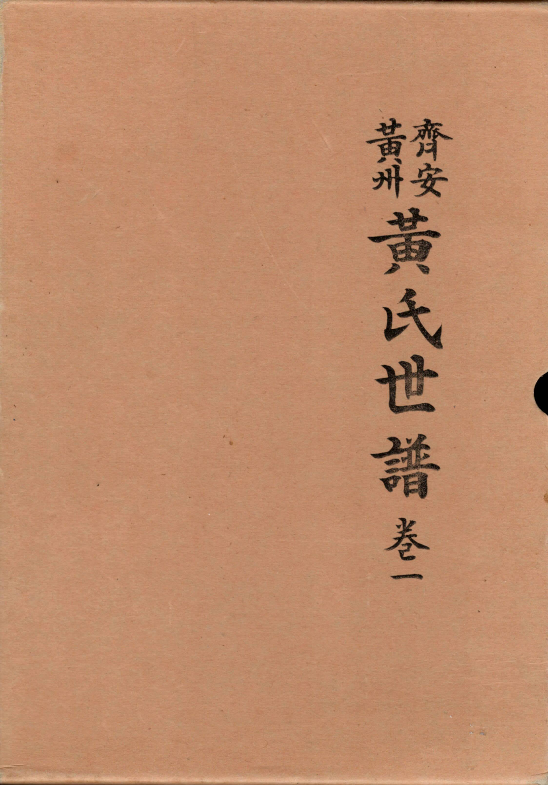

Visited Korea a number of times.
But I did not meet mother’s extended family.
During summer of 2007, Mom met one of her relatives.
That relative gave us 2 books containing records of mom’s family
I couldn’t recognize any of its writings.
Moreover I didn’t understand the layout of that type of book.
I appreciated the work of gathering and preserving such records.

But the contents of the book was still inaccessible.
Over the years, I have had an interest in learning about the history, people and the language of China.
About 30 years ago, our company opened an operation in Suzhou (苏州市)1. One of the equipment to run its factory was sourced from Utah, where I was working. I was chosen along with several other engineers to support that transfer.
My first trip to a country, other than Korea and US. The experience was more than I had read about and heard from people that have traveled there. More than I could have imagined
Indeed, classical saying is
上有天堂, 下有苏杭
Above heaven, below Suzhou and Hangzhou.
Decided to pursue studying the language. The course at SLCC (Salt Lake Community College) was taught by a gentleman from 桂林市2
Made some progress but gave up learning at an regularly scheduled intervals.
Met other individuals that encouraged me. Including Pat Geraghty who quoted a study,
People that learn a new language before the age of 14 can pick up any language, if they choose that route
Recently, had a dinner with a neighbor. We had known them since school days as newly wed families. We were welcoming their son who was recently married. The husband and wife both worked at Family Search
Showed these 2 books to them.
They immediately gave a historical and practical overview and lesson on how to access these records.
Renewed Effort
Opened its pages again.
Came across this record. Book 2 page 319, row 2

황운학
무자년 1 웧 15 일 생 실백천 조씨 이거 평창군 대화면
He was born in the yea, 戊子. 22 generations from the founder of this branch of the Hwang Family.
According to 육십갑자(六十甲子)3 way of counting years corresponds to
- 2008
- 1948
- 1888
- 1828
- 1768
- 1708
- 1648
- 1588
- 1528
- 1468
황윤일
His father was 윤일 潤一 Born in the year 己酉 기유 2 월 8 일 생
That year corresponds to
- 1969
- 1909
- 1849
- 1789
- 1729
- 1669
- 1609
- 1549
- 1489
- 1429
He passed away in the year, 丁巳(정사), at age 52.
9 월 20 일
- 1977
- 1917
- 1857
- 1797
- 1737
- 1677
- 1617
- 1557
- 1497
- 1437
실경주 김씨 부진(?) 신 현 3 월 25 일 생 甲寅(갑인) 10 월 10 일
(married lady Kim who was born in the year 甲寅(갑인))
- 1974
- 1914
- 1854
- 1794
- 1734
- 1674
- 1614
- 1554
- 1494
- 1434
On Line Portal (in Korean)
Entered names of 2 individuals above, narrowing search to 제안(齊安)황씨
제안(齊安)황씨 http://hwang.ne.kr/jokbo/DAT/jbClan.php
The search resulted in,
My Maternal Grandfather
He was also named 황운학 and his father was 황만수.
They are of the family line,齊安黃氏 (제안황씨).
That is according to the records we have understood thus far.
Grandfather was born in the year 1909.
I will keep searching this book and learn more about the 족보4.
## Other Findings
- founder of the 제안(齊安)황씨